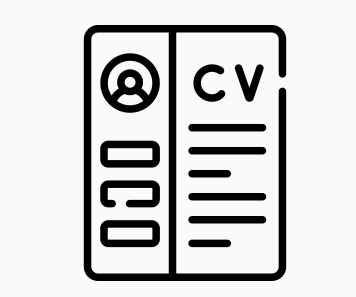
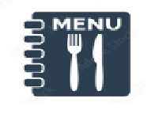

Karoline Pacheco de Melo
Brasileira, Contadora formada pela Universidade Federal de Juiz de Fora (UFJF). Atualmente, estudante de Direito pela UFJF.
Sobre mim
Estou entusiasmada pela oportunidade de aprender mais sobre desenvolvimento WEB que tive através do programa Elas NaTech, desenvolvido pela CCR, JA Brasil e IBM.
Trabalhei na área financeira e trabalhista, onde desenvolvi afinidades com as aplicações de suporte às tarefas, o que me motivou a buscar conhecimento sobre Desenvolvimento de Sofwares, Programação e Tecnologia da Informação.
Sou apaixonada por música e pela arte, e vejo a ação de programar como uma arte, pela qual criamos nosso código de acordo com as ideias e criações que existem em nossa mente.
Meus Projetos

Currículo
